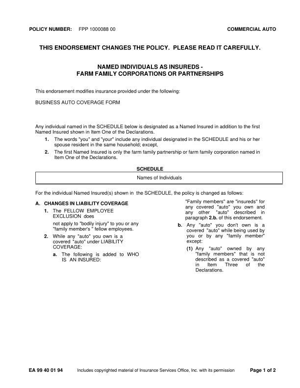
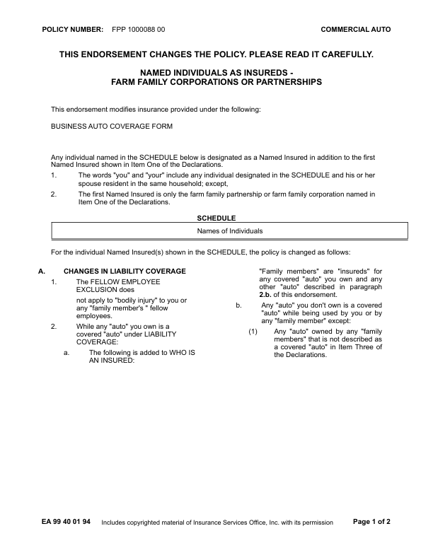
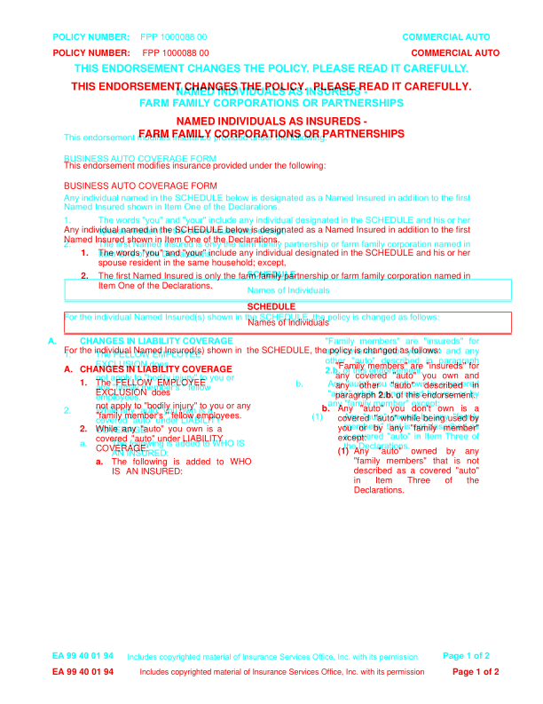
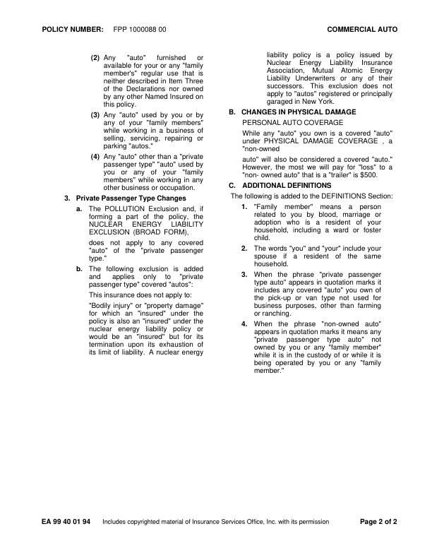
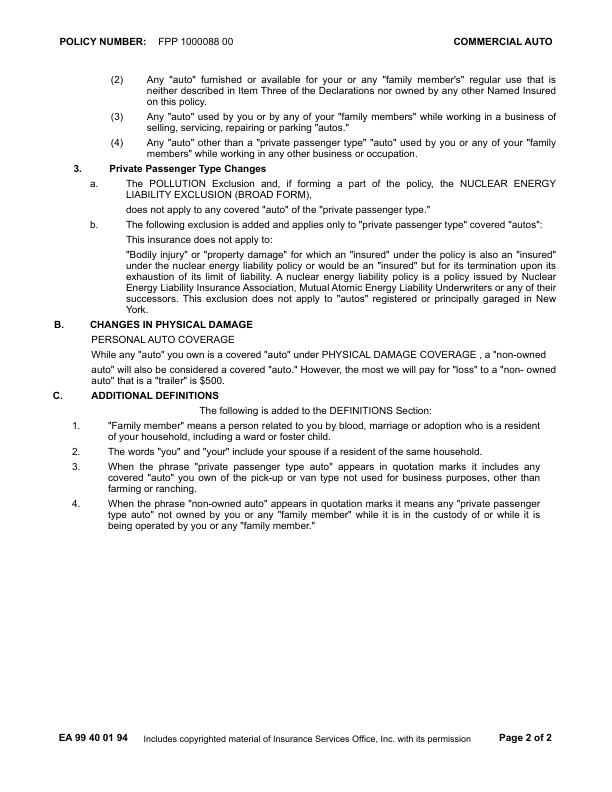
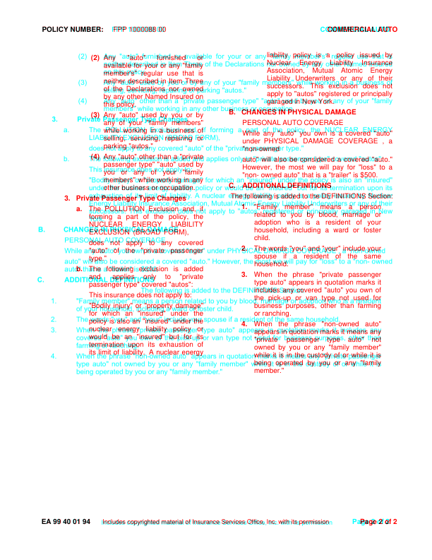

EA9940_0194: DIFFERENT score 99.9% pages golden 2 html 2 (pages with text) words golden 698 html 699 missing 0 extra 1 EXTRA (in the HTML render, not in the GhostDraft golden) [PASSENGER] <= 4. When the phrase "non-owned auto" appears in quotation marks it means any "private passenger golden C:\src\fact-docgen\src\Moe.Commercial.Documents.Generation.Integration.Tests\TestData\Snapshots\EA9940_0194\GoldenSnapshot.txt template C:\src\fact-poc\output\ghostdraft\batch\EA9940-0194.json serverxml C:\src\fact-poc\output\ghostdraft\serverxml\EA9940_0194\ServerXml.xml



moved POLICY (-0.0, -18.0)pt moved NUMBER: (-0.2, -18.0)pt moved FPP (-2.1, -18.0)pt moved 1000088 (-2.3, -18.0)pt moved 00 (-2.3, -18.0)pt moved COMMERCIAL (-10.0, -18.0)pt moved AUTO (-10.6, -18.0)pt moved THIS (+3.5, -20.6)pt moved ENDORSEMENT (+3.5, -20.6)pt moved CHANGES (+3.5, -20.6)pt moved THE (+3.5, -20.6)pt moved POLICY. (+3.5, -20.6)pt moved PLEASE (-1.1, -20.6)pt moved READ (-1.1, -20.6)pt moved IT (-1.1, -20.6)pt moved CAREFULLY. (-1.1, -20.6)pt moved NAMED (-0.8, -34.2)pt moved INDIVIDUALS (-0.4, -34.2)pt moved AS (-0.4, -34.2)pt moved INSUREDS (-0.0, -34.2)pt moved - (+0.4, -34.2)pt moved FARM (+1.0, -34.8)pt moved FAMILY (+0.7, -34.8)pt moved CORPORATIONS (-1.0, -34.8)pt moved OR (-1.5, -34.8)pt moved PARTNERSHIPS (-1.2, -34.8)pt moved This (+0.0, -31.5)pt moved endorsement (+0.2, -31.5)pt moved modifies (+0.4, -31.5)pt moved insurance (+0.6, -31.5)pt moved provided (+0.8, -31.5)pt moved under (+1.0, -31.5)pt moved the (+1.2, -31.5)pt moved following: (+1.4, -31.5)pt moved BUSINESS (+0.0, -31.3)pt moved AUTO (-0.6, -31.3)pt moved COVERAGE (-0.8, -31.3)pt moved FORM (-0.8, -31.3)pt moved Any (+0.0, -36.3)pt moved individual (-0.0, -36.3)pt moved named (-0.0, -36.3)pt moved in (-0.0, -36.3)pt moved the (-0.0, -36.3)pt moved SCHEDULE (-0.0, -36.3)pt moved below (-0.0, -36.3)pt moved is (-0.0, -36.3)pt moved designated (-0.0, -36.3)pt moved as (-0.0, -36.3)pt moved a (-0.0, -36.3)pt moved Named (-0.0, -36.3)pt moved Insured (-0.0, -36.3)pt moved in (-0.0, -36.3)pt moved addition (-0.0, -36.3)pt moved to (-0.0, -36.3)pt moved the (-0.1, -36.3)pt moved first (-0.1, -36.3)pt moved Named (+0.0, -36.8)pt moved Insured (-0.0, -36.8)pt moved shown (-0.0, -36.8)pt moved in (-0.0, -36.8)pt moved Item (-0.0, -36.8)pt moved One (-0.0, -36.8)pt moved of (-0.0, -36.8)pt moved the (-0.0, -36.8)pt moved Declarations. (-0.0, -36.8)pt moved 1. (-19.5, -36.8)pt moved The (+0.0, -36.8)pt moved words (+0.0, -36.8)pt moved "you" (+0.0, -36.8)pt moved and (+0.0, -36.8)pt moved "your" (+0.0, -36.8)pt moved include (+0.0, -36.8)pt moved any (+0.0, -36.8)pt moved individual (+0.0, -36.8)pt moved designated (+0.0, -36.8)pt moved in (+0.0, -36.8)pt moved the (+0.0, -36.8)pt moved SCHEDULE (+0.0, -36.8)pt moved and (+0.0, -36.8)pt moved his (+0.0, -36.8)pt moved or (-0.0, -36.8)pt moved her (-0.0, -36.8)pt moved spouse (+0.0, -36.6)pt moved resident (+0.0, -36.6)pt moved in (+0.0, -36.6)pt moved the (+0.0, -36.6)pt moved same (+0.0, -36.6)pt moved household; (+0.0, -36.6)pt moved except, (+0.0, -36.6)pt moved 2. (-19.5, -36.6)pt moved The (+0.0, -36.6)pt moved first (+0.0, -36.6)pt moved Named (+0.0, -36.6)pt moved Insured (+0.0, -36.6)pt moved is (+0.0, -36.6)pt moved only (+0.0, -36.6)pt moved the (+0.0, -36.6)pt moved farm (+0.0, -36.6)pt moved family (+0.0, -36.6)pt moved partnership (+0.0, -36.6)pt moved or (-0.0, -36.6)pt moved farm (-0.0, -36.6)pt moved family (-0.0, -36.6)pt moved corporation (-0.0, -36.6)pt moved named (-0.0, -36.6)pt moved in (-0.0, -36.6)pt moved Item (+0.0, -36.3)pt moved One (+0.0, -36.3)pt moved of (+0.0, -36.3)pt moved the (+0.0, -36.3)pt moved Declarations. (+0.0, -36.3)pt moved SCHEDULE (-0.3, -36.7)pt moved Names (-0.6, -36.5)pt moved of (-0.5, -36.5)pt moved Individuals (-0.5, -36.5)pt moved For (+0.0, -37.7)pt moved the (+0.1, -37.7)pt moved individual (+0.2, -37.7)pt moved Named (+0.3, -37.7)pt moved Insured(s) (+0.4, -37.7)pt moved shown (+0.5, -37.7)pt moved in (+0.5, -37.7)pt moved the (-2.2, -37.7)pt moved SCHEDULE, (-2.1, -37.7)pt moved the (-2.1, -37.7)pt moved policy (-2.0, -37.7)pt moved is (-2.0, -37.7)pt moved changed (-1.9, -37.7)pt moved as (-1.7, -37.7)pt moved follows: (-1.7, -37.7)pt moved "Family (-11.5, -28.3)pt moved members" (-8.6, -28.3)pt moved are (-5.7, -28.3)pt moved "insureds" (-2.8, -28.3)pt moved for (+0.1, -28.3)pt moved any (-11.5, -28.0)pt moved covered (-13.3, -28.0)pt moved "auto" (-15.1, -28.0)pt moved you (-17.1, -28.0)pt moved own (-18.9, -28.0)pt moved and (-20.7, -28.0)pt moved 1. (-17.9, -32.3)pt moved The (+0.0, -32.3)pt moved FELLOW (-2.5, -32.3)pt moved EMPLOYEE (-5.2, -32.3)pt moved other (-38.5, -28.5)pt moved "auto" (-44.4, -28.5)pt moved described (-48.4, -28.5)pt moved in (-52.4, -28.5)pt moved EXCLUSION (+0.0, -32.0)pt moved does (-2.6, -32.0)pt moved 2.b. (-59.8, -28.3)pt moved of (-59.8, -28.3)pt moved this (-59.8, -28.3)pt moved endorsement. (-59.8, -28.3)pt moved not (+0.0, -32.0)pt moved apply (+0.0, -32.0)pt moved to (+0.0, -32.0)pt moved "bodily (+0.0, -32.0)pt moved injury" (+0.0, -32.0)pt moved to (+0.0, -32.0)pt moved you (+0.0, -32.0)pt moved or (+0.0, -32.0)pt moved b. (-29.4, -28.3)pt moved Any (-11.3, -28.3)pt moved "auto" (-15.9, -28.3)pt moved you (-20.4, -28.3)pt moved don't (-25.1, -28.3)pt moved own (-29.6, -28.3)pt moved is (-34.1, -28.3)pt moved a (-38.8, -28.3)pt moved "family (+18.9, -32.5)pt moved member's (+18.9, -32.5)pt moved " (+18.9, -32.5)pt moved fellow (+18.9, -32.5)pt moved "auto" (-52.1, -28.0)pt moved while (-51.1, -28.0)pt moved being (-50.1, -28.0)pt moved used (-49.0, -28.0)pt moved by (-48.0, -28.0)pt moved 2. (-18.0, -21.3)pt moved While (+0.1, -21.3)pt moved any (-1.8, -21.3)pt moved "auto" (-3.7, -21.3)pt moved you (-5.5, -21.3)pt moved own (-7.3, -21.3)pt moved is (-9.0, -21.3)pt moved a (-10.8, -21.3)pt moved (1) (-29.4, -39.5)pt moved Any (-11.3, -39.5)pt moved "auto" (-17.1, -39.5)pt moved owned (-22.8, -39.5)pt moved by (-28.5, -39.5)pt moved any (-34.2, -39.5)pt moved a. (-18.0, -21.5)pt moved The (+0.1, -21.5)pt moved following (-3.9, -21.5)pt moved is (-7.9, -21.5)pt moved added (-11.9, -21.5)pt moved to (-15.9, -21.5)pt moved WHO (-19.9, -21.5)pt moved IS (+140.6, -32.5)pt moved AN (-16.2, -21.3)pt moved INSURED: (-16.2, -21.3)pt moved EA (-0.0, -19.0)pt moved 99 (-0.4, -19.0)pt moved 40 (-0.4, -19.0)pt moved 01 (-0.4, -19.0)pt moved 94 (-0.4, -19.0)pt moved Includes (-14.0, -18.0)pt moved copyrighted (-13.3, -18.0)pt moved material (-12.3, -18.0)pt moved of (-11.6, -18.0)pt moved Insurance (-11.3, -18.0)pt moved Services (-10.5, -18.0)pt moved Office, (-9.8, -18.0)pt moved Inc. (-9.4, -18.0)pt moved with (-9.0, -18.0)pt moved its (-8.7, -18.0)pt moved permission (-8.4, -18.0)pt moved Page (-10.8, -19.0)pt moved 1 (-10.7, -19.0)pt moved of (-10.8, -19.0)pt moved 2 (-10.8, -19.0)pt size 1. 10.0 -> 10.0pt size 2. 10.0 -> 10.0pt size 1. 10.0 -> 10.0pt size b. 10.0 -> 10.0pt size 2. 10.0 -> 10.0pt size (1) 10.0 -> 10.0pt size a. 10.0 -> 10.0pt missing h rule at 351.5 (73.1-576.3) missing h rule at 375.3 (73.1-576.3) missing h rule at 376.1 (73.1-576.3) missing h rule at 376.8 (73.1-576.3) missing v rule at 72.7 (351.9-374.9) missing v rule at 576.7 (351.9-374.9) extra h rule at 314.6 (72.8-576.8) extra h rule at 337.9 (72.8-576.8) extra h rule at 339.4 (72.8-576.8) extra v rule at 73.1 (314.2-337.5) extra v rule at 576.4 (314.2-337.5)



moved FPP (-2.1, -0.0)pt moved 1000088 (-2.3, -0.0)pt moved 00 (-2.3, -0.0)pt moved COMMERCIAL (-10.0, -0.0)pt moved AUTO (-10.6, -0.0)pt moved (2) (-18.0, -2.5)pt moved Any (+0.0, -2.5)pt moved "auto" (-10.7, -2.5)pt moved furnished (-21.3, -2.5)pt moved or (-32.0, -2.5)pt moved available (+114.4, -13.5)pt moved for (+116.3, -13.5)pt moved your (+118.2, -13.5)pt moved or (+120.2, -13.5)pt moved any (+122.1, -13.5)pt moved "family (+124.1, -13.5)pt moved member's" (+270.4, -24.5)pt moved regular (+269.8, -24.5)pt moved use (+269.2, -24.5)pt moved that (+268.6, -24.5)pt moved is (+267.9, -24.5)pt moved neither (+0.0, -24.2)pt moved described (-0.2, -24.2)pt moved in (-0.5, -24.2)pt moved Item (-0.7, -24.2)pt moved Three (-1.2, -24.2)pt moved of (+143.3, -35.2)pt moved the (+141.7, -35.2)pt moved Declarations (+140.0, -35.2)pt moved nor (+138.4, -35.2)pt moved owned (+136.7, -35.2)pt moved by (+281.2, -46.2)pt moved any (+281.3, -46.2)pt moved other (+281.6, -46.2)pt moved Named (+281.8, -46.2)pt moved Insured (+282.1, -46.2)pt moved on (-130.2, -35.0)pt moved this (+13.9, -46.0)pt moved policy. (+14.2, -46.0)pt moved (3) (-18.0, -46.0)pt moved Any (+0.0, -46.0)pt moved "auto" (-1.4, -46.0)pt moved used (-2.7, -46.0)pt moved by (-4.1, -46.0)pt moved you (-5.6, -46.0)pt moved or (-6.9, -46.0)pt moved by (-8.4, -46.0)pt moved any (+136.6, -57.0)pt moved of (+134.4, -57.0)pt moved your (+132.4, -57.0)pt moved "family (+130.3, -57.0)pt moved members" (+128.3, -57.0)pt moved while (+273.1, -68.0)pt moved working (+272.1, -68.0)pt moved in (+271.1, -68.0)pt moved a (+270.0, -68.0)pt moved business (+268.9, -68.0)pt moved of (+268.0, -68.0)pt moved While (-252.0, +165.8)pt moved any (-253.7, +165.8)pt moved "auto" (-255.3, +165.8)pt moved you (-256.9, +165.8)pt moved own (-258.6, +165.8)pt moved is (-260.3, +165.8)pt moved a (-262.0, +165.8)pt moved covered (-263.7, +165.8)pt moved "auto" (-265.4, +165.8)pt moved under (-49.9, +154.8)pt moved PHYSICAL (-52.1, +154.8)pt moved DAMAGE (-55.7, +154.8)pt moved COVERAGE (-59.1, +154.8)pt moved , (-62.5, +154.8)pt moved a (-65.7, +154.8)pt moved "non-owned (+149.7, +143.8)pt moved auto" (-252.0, +143.8)pt moved will (-252.9, +143.8)pt moved also (-253.8, +143.8)pt moved be (-254.8, +143.8)pt moved considered (-255.7, +143.8)pt moved a (-256.6, +143.8)pt moved covered (-257.5, +143.8)pt moved "auto." (-258.5, +143.8)pt moved However, (-42.9, +132.8)pt moved the (-45.2, +132.8)pt moved most (-46.8, +132.8)pt moved we (-48.6, +132.8)pt moved will (-50.3, +132.8)pt moved pay (-52.0, +132.8)pt moved for (-53.7, +132.8)pt moved "loss" (-55.4, +132.8)pt moved to (-57.1, +132.8)pt moved a (-58.8, +132.8)pt moved "non- (+156.8, +121.8)pt moved owned (+157.0, +121.8)pt moved auto" (-310.5, +133.0)pt moved that (-310.5, +133.0)pt moved is (-310.5, +133.0)pt moved a (-310.5, +133.0)pt moved "trailer" (-310.5, +133.0)pt moved is (-310.6, +133.0)pt moved $500. (-310.6, +133.0)pt moved C. (-271.2, +133.0)pt moved ADDITIONAL (-252.0, +133.0)pt moved DEFINITIONS (-251.6, +133.0)pt moved The (-127.2, +133.0)pt moved following (-127.0, +133.0)pt moved is (-126.7, +133.0)pt moved added (-126.5, +133.0)pt moved to (-126.2, +133.0)pt moved the (-126.0, +133.0)pt moved DEFINITIONS (-125.7, +133.0)pt moved Section: (-125.6, +133.0)pt moved 1. (-270.0, +133.0)pt moved "Family (-251.9, +133.0)pt moved member" (-259.2, +133.0)pt moved means (-266.5, +133.0)pt moved a (-273.8, +133.0)pt moved person (-281.1, +133.0)pt moved related (-98.1, +122.0)pt moved to (-101.7, +122.0)pt moved you (-105.2, +122.0)pt moved by (-108.8, +122.0)pt moved blood, (-112.4, +122.0)pt moved marriage (-116.0, +122.0)pt moved or (-119.6, +122.0)pt moved adoption (+63.5, +111.0)pt moved who (+58.6, +111.0)pt moved is (+53.5, +111.0)pt moved a (+48.6, +111.0)pt moved resident (+43.6, +111.0)pt moved of (-396.5, +121.5)pt moved your (-401.5, +121.5)pt moved household, (-218.6, +110.5)pt moved including (-222.0, +110.5)pt moved a (-225.3, +110.5)pt moved ward (-228.6, +110.5)pt moved or (-232.0, +110.5)pt moved foster (-235.3, +110.5)pt moved child. (-52.4, +99.5)pt moved 2. (-270.0, +99.5)pt moved The (-251.9, +99.5)pt moved words (-252.3, +99.5)pt moved "you" (-252.6, +99.5)pt moved and (-252.9, +99.5)pt moved "your" (-253.3, +99.5)pt moved include (-253.6, +99.5)pt moved your (-254.0, +99.5)pt moved spouse (-71.0, +88.5)pt moved if (-77.4, +88.5)pt moved a (-83.9, +88.5)pt moved resident (-90.2, +88.5)pt moved of (-96.7, +88.5)pt moved the (-103.1, +88.5)pt moved same (-109.5, +88.5)pt moved household. (+73.4, +77.5)pt moved 3. (-270.0, +77.5)pt moved When (-251.9, +77.5)pt moved the (-253.9, +77.5)pt moved phrase (-255.9, +77.5)pt moved "private (-258.0, +77.5)pt moved passenger (-260.0, +77.5)pt moved type (-74.4, +66.5)pt moved auto" (-72.6, +66.5)pt moved appears (-70.8, +66.5)pt moved in (-68.9, +66.5)pt moved quotation (-67.1, +66.5)pt moved marks (-65.3, +66.5)pt moved it (-63.4, +66.5)pt moved includes (+122.1, +55.5)pt moved any (+123.7, +55.5)pt moved covered (-312.3, +66.8)pt moved "auto" (-312.0, +66.8)pt moved you (-311.7, +66.8)pt moved own (-311.4, +66.8)pt moved of (-311.2, +66.8)pt moved the (-126.9, +55.8)pt moved pick-up (-129.0, +55.8)pt moved or (-131.1, +55.8)pt moved van (-133.2, +55.8)pt moved type (-135.4, +55.8)pt moved not (-137.5, +55.8)pt moved used (-139.5, +55.8)pt moved for (-141.6, +55.8)pt moved business (+42.6, +44.8)pt moved purposes, (+41.2, +44.8)pt moved other (+40.0, +44.8)pt moved than (+38.7, +44.8)pt moved farming (-398.9, +56.0)pt moved or (-215.8, +45.0)pt moved ranching. (-215.8, +45.0)pt moved 4. (-270.0, +45.0)pt moved When (-251.9, +45.0)pt moved the (-257.0, +45.0)pt moved phrase (-262.3, +45.0)pt moved "non-owned (-267.4, +45.0)pt moved auto" (-272.6, +45.0)pt moved appears (-89.2, +34.0)pt moved in (-88.8, +34.0)pt moved quotation (-88.3, +34.0)pt moved marks (-88.0, +34.0)pt moved it (-87.5, +34.0)pt moved means (-87.1, +34.0)pt moved any (-86.7, +34.0)pt moved "private (+96.8, +23.0)pt moved passenger (+87.5, +23.0)pt moved type (-355.3, +33.5)pt moved auto" (-361.8, +33.5)pt moved not (-368.2, +33.5)pt moved owned (-183.9, +22.5)pt moved by (-184.6, +22.5)pt moved you (-185.3, +22.5)pt moved or (-186.1, +22.5)pt moved any (-186.9, +22.5)pt moved "family (-187.7, +22.5)pt moved member" (-188.4, +22.5)pt moved while (-4.1, +11.5)pt moved it (-3.7, +11.5)pt moved is (-3.2, +11.5)pt moved in (-2.9, +11.5)pt moved the (-2.4, +11.5)pt moved custody (-2.0, +11.5)pt moved of (-1.6, +11.5)pt moved or (-1.2, +11.5)pt moved while (-0.8, +11.5)pt moved it (-0.4, +11.5)pt moved is (+0.0, +11.5)pt moved being (-252.0, +11.8)pt moved operated (-255.0, +11.8)pt moved by (-258.1, +11.8)pt moved you (-261.1, +11.8)pt moved or (-264.1, +11.8)pt moved any (-267.2, +11.8)pt moved "family (-270.2, +11.8)pt moved member." (-87.2, +0.8)pt moved Office, (+2.4, -0.0)pt moved Inc. (+2.8, -0.0)pt moved with (+3.3, -0.0)pt moved its (+3.6, -0.0)pt moved permission (+3.8, -0.0)pt moved Page (-10.8, -1.0)pt moved 2 (-10.7, -1.0)pt moved of (-10.8, -1.0)pt moved 2 (-10.8, -1.0)pt size (2) 10.0 -> 10.0pt size (3) 10.0 -> 10.0pt size 1. 10.0 -> 10.0pt size 2. 10.0 -> 10.0pt size 3. 10.0 -> 10.0pt size 4. 10.0 -> 10.0pt